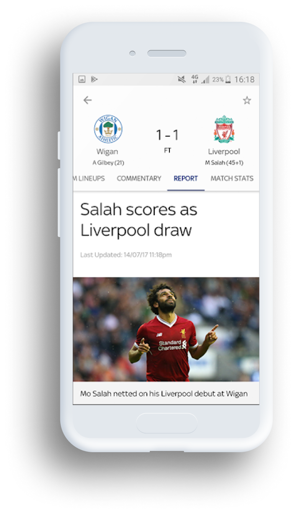
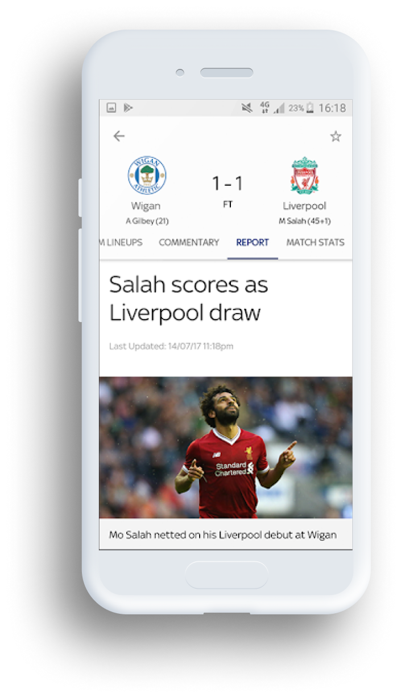

Sat, 12:35pm
Arsenal v
Chelsea
Friendly Match


Turn on all match notifications
An Enhanced Football Experience
The Guardian Live Scores app is your go to app for
live scores and watching Premier League goals… Get in there, what a result!
As well as videos of all the goals, you can watch match highlights,
check out the latest scores and results and stay bang-up-to-date with the big football stories
from The Guardian publication.
User-friendly Interface
The in-game goal clips from every Premier League match are available to
Guardian TV customers with a Guardian subscription.
So, if you’re not a subscriber, now’s the time to make that savvy call.
If that’s a step too far for you, you can still watch loads of firecracker Premier League
action as long as you sign in with a free Guardian iD.

 



Features That Will Tailor Your Experience


• Video highlights for every Premier League and English Football League game


• Match pages showing live scores, commentary, team line-ups and enhanced match stats to keep you up-to-date on all the action


• The Guardian News Vidiprinter. Follow the goals as they go in with our new and improved Vidiprinter


• Notifications for your teams, including in-game goal clips and Premier League match highlights for Sky TV subscribers with Guardian.


• The new picture in picture video mode means you can watch goals, manager interviews and more whilst using other areas of the app – so you don’t need to miss any of the action


• Match reports, previews and a dedicated news section


• Brand new video section including dedicated areas for your chosen team, trending video, Premier League, Football league and other major leagues


• Live updated league tables including all the domestic, European and major leagues and tournaments

• And you can achieve super-fan status by personalising your home page with up-to-the-minute information on your team.
What Our Users Say

-

Pep Guardiola
I use this app every day and it's a great way to keep up to date with what's going on in football.
-

Noah Jackson
I use this app every day and it's a great way to keep up to date with what's going on in football. It's a shame it won't rotate into landscape mode like its main competitor
-
Darren Wilson
Good for scores and commentary but the team lineups have stopped working.
-

Michael Akinuli
Good for watching the goals and great for highlights instead of waiting till 10:30 before you can watch highlights on March of the day also no need of sky go
-
Sarah Udoma
This app has videos for other premier league teams who play and it also gives me nofications when my favourite team plays
-
Maurizio Sarri
I use this app every day and it's a great way to keep up to date with what's going on in football.
-
Jürgen Klopp
Good for scores and commentary but the team lineups have stopped working.

We have been featured in